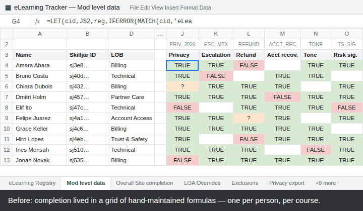
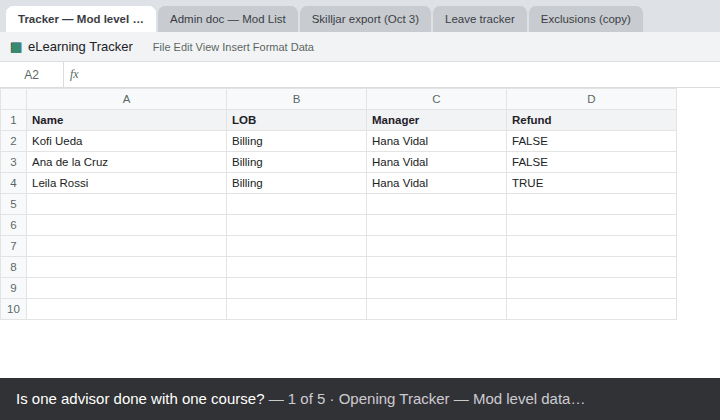
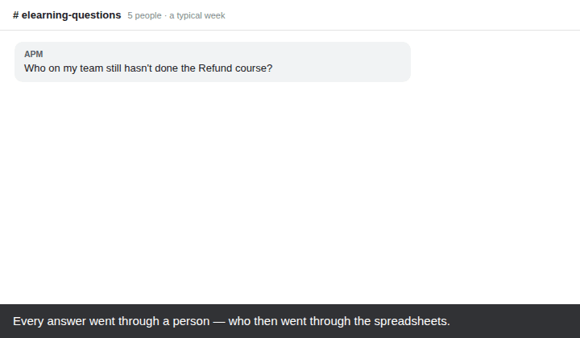

Case study
One place for every eLearning question
How I replaced a web of spreadsheets, formulas and back-and-forth messages with a single portal that tracks mandatory eLearning completion for about 460 advisors.
- Scope
- About 460 advisors
- Users
- Advisors, managers, RTA, WFM, reporting
- My role
- Designed and built it
- Built with
- Google Apps Script and Sheets
Each team went to the spreadsheets, or to each other. Most questions ended up with the Orientation team, who stitched the answer together by hand.
Before: the answer was spread across many sheets
Completion tracking lived in a set of Google Sheets that depended on each other. The tracker was a grid with one formula per person, per course. Those formulas pulled in Skilljar exports, roster data from documents owned by other teams, and separate lists of leave and exclusions.
It worked as long as nobody moved a column and everybody remembered the unwritten rules. When something changed upstream, the numbers broke without warning.
Getting an answer meant asking someone. Managers asked who on their team was outstanding. RTA asked for names they could tag. Workforce flagged who was on leave. The Orientation team then opened several documents and pieced the answer together by hand, every time.



These animations are reconstructions. The layouts mirror the original sheets, but every name, ID and figure is fictional.
After: a single front door
The portal is a web app built on Google Apps Script. It sits on top of the same data, with the rules built in. Everyone opens it and sees what they need for their role, and nobody has to ask.
| The question | Before | With the portal |
|---|---|---|
| Who still hasn't done this course? | Ask Orientation, who filter the tracker and cross-check other documents. | The dashboard shows every course live, with a click-through to each person still outstanding and why. Managers see only their own team. |
| What do I still need to complete? | Ask your manager, who asks Orientation. | Advisors see their own to-do list, deadlines, time needed and a direct link to each course. |
| Was this person late, or on leave? | Compare a leave list against the deadline by hand. | Leave is recorded once. "Late but excused" is worked out day by day, so people on leave are never chased or marked late. |
| Who do we chase? | Build a list, then look up everyone's Slack name in another document. | RTA get a ready chase list with Slack names. Chase emails are prepared, reviewed, then sent. |
| Can we trust these numbers? | Errors surfaced when someone happened to notice. | Health checks run on every load, and anything failing is shown at the top of the dashboard with what to do about it. |
| We have a new course to track. | Add a tab, insert a column, copy formulas down and add a report row, all by hand. | One form builds the tab, the column and the report row, after a review step that shows the headcount it will produce. |
| Here's this week's Skilljar export. | Paste it into a tab and hope it's the right one. | Paste the raw export. It is reshaped and checked against who is actually assigned before anything is written. |
| The weekly client report is due. | Assembled by hand from several tabs. | Generated from a chosen set of courses, with team breakdowns and notes, in one step. |
Source documents stay untouched
Roster documents owned by other teams are never edited. They are snapshotted daily, and every correction is made on the portal's side.
Safe by default
A Sandbox copy is used for testing and learning. Every action is logged, recent entries can be undone, and destructive steps ask twice.
Exceptions are explicit
Exclusions, leave and manual completions are recorded with who added them and why, instead of being quietly fixed in a cell.
Try the portal
This is the real interface, running in your browser with fictional data. Anything you change stays on your device and resets each day.
- Click any course card to see who is outstanding.
- Use "Viewing as" to see a manager's or advisor's view.
- Paste the sample export from the Demo button into Import.
Designed for desktop. On a phone, scroll the demo sideways or open it full screen.
Built with Google Apps Script, Google Sheets and plain HTML, CSS and JavaScript. Client and company details, real people and production data have been removed, and the demo runs entirely on invented data.